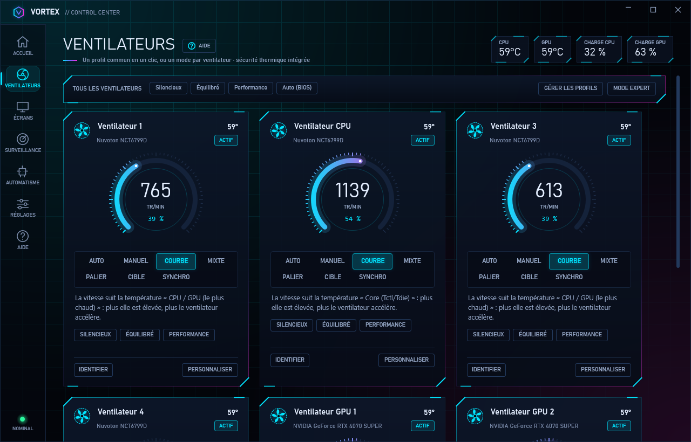
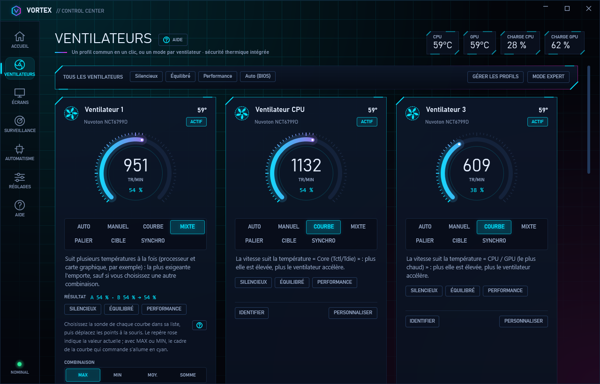
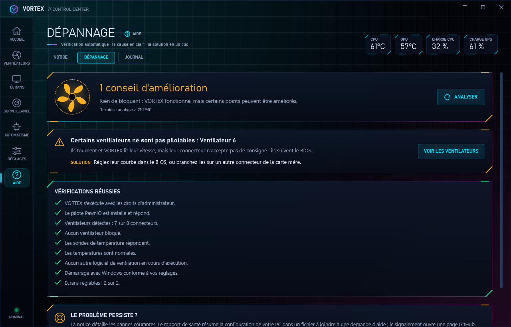
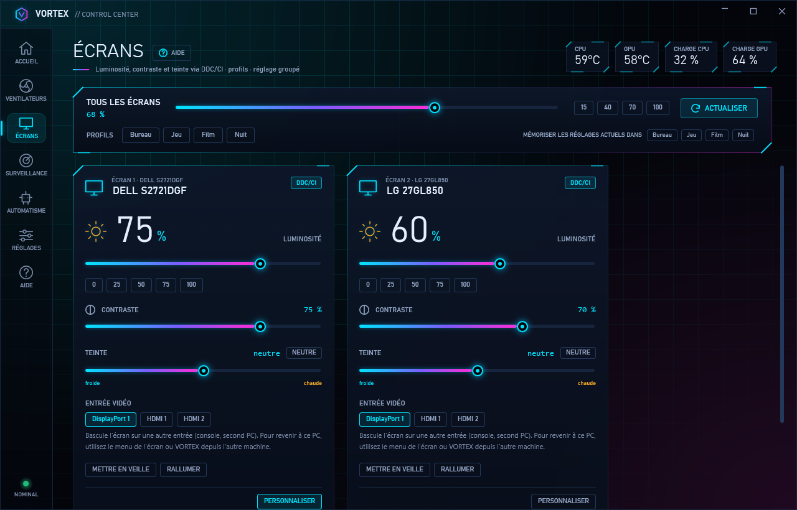
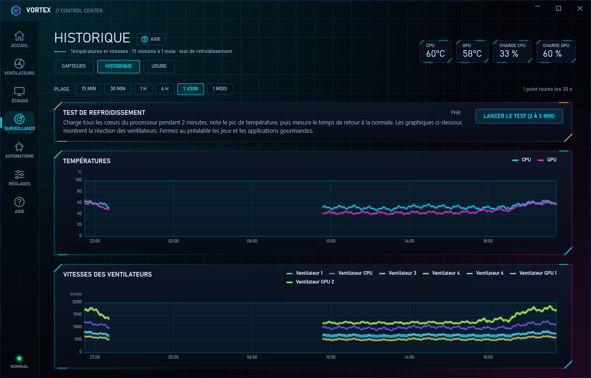
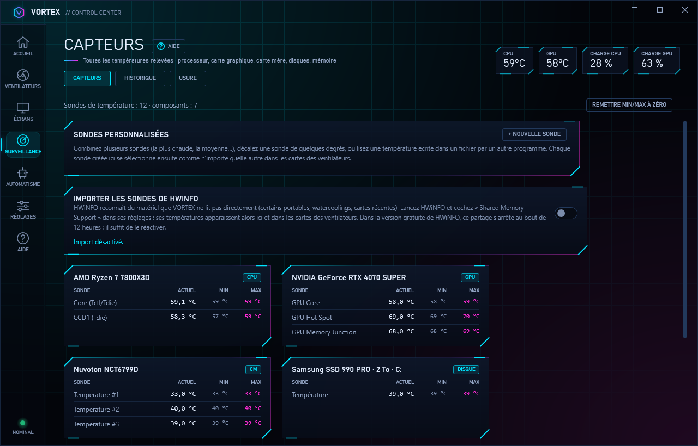
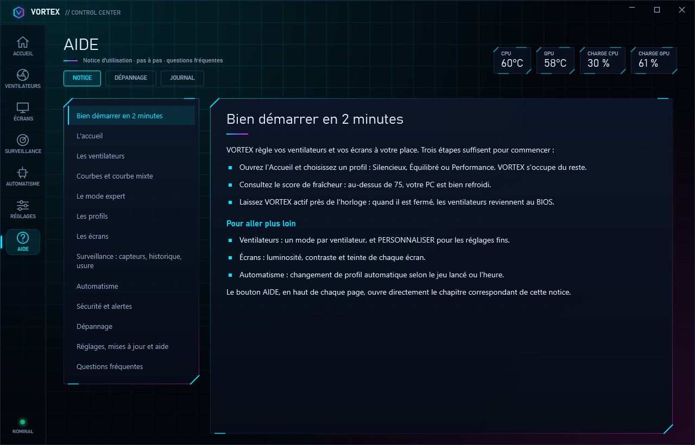

Silencieux au repos.
Frais quand ça chauffe.
VORTEX règle chaque ventilateur de votre PC selon la température réelle, ainsi que la luminosité de vos écrans, depuis un seul logiciel. Gratuit, sans publicité, sans compte.
- 100 % gratuit
- Sans publicité
- Sans compte
- Pilote inclus


Tout votre PC, d'un seul coup d'œil
VORTEX peut remplacer les utilitaires de la carte mère, de la carte graphique et des écrans. Il travaille discrètement près de l'horloge.
Ventilation
Chaque ventilateur de la carte mère et de la carte graphique suit la bonne température.
Écrans
Luminosité, contraste et teinte de tous vos écrans, sans toucher à leurs boutons.
Surveillance
Températures, historique jusqu'à un mois et alerte quand un ventilateur s'use.
Dépannage
Un souci ? VORTEX en trouve la cause en quelques secondes et propose la solution.
Le silence quand tout est calme, le souffle quand ça chauffe
Chaque ventilateur suit la sonde de votre choix. Au premier lancement, VORTEX détecte vos ventilateurs, mesure leur vitesse minimale et leur attribue un profil : en quelques minutes, c'est réglé.
- Sept modes : auto, fixe, courbe, mixte, palier, cible et synchro
- Profils Silencieux, Équilibré et Performance en un clic
- Arrêt complet sous un seuil, réactivité réglable


Un ventilateur, plusieurs sources de chaleur
Un ventilateur de boîtier peut suivre le processeur et la carte graphique à la fois. Le mode cible, lui, cherche seul la vitesse la plus basse qui tient la température demandée.
- Jusqu'à quatre courbes, combinées par la plus rapide, la moyenne ou la somme
- Sondes sur mesure (maximum, moyenne, écart) et import HWiNFO
- Le moins de bruit possible pour une température donnée


Un souci ? VORTEX trouve la cause pour vous
Pilote, ventilateurs, sondes, températures, logiciels qui entrent en conflit : le dépannage examine votre PC en quelques secondes et explique chaque anomalie simplement.
- Diagnostic complet en quelques secondes
- Des explications claires, sans jargon
- Un bouton qui applique la solution quand c'est possible


Tous vos écrans réglés d'un seul geste
Luminosité, contraste, teinte, volume et entrée vidéo de chaque écran compatible DDC/CI, sans chercher les boutons sous l'écran. Profils Bureau, Jeu, Film et Nuit, et plages horaires qui suivent même le lever et le coucher du soleil.
- La molette au-dessus de l'icône règle la luminosité
- Plusieurs écrans harmonisés entre eux
- Luminosité baissée automatiquement après inactivité


Votre PC sous surveillance, jour et nuit
Toutes les températures du processeur, de la carte graphique, de la carte mère et des disques, un historique de 15 minutes à un mois et un test thermique qui évalue votre refroidissement.
- Minimum et maximum, en °C ou en °F
- Un ventilateur qui s'use ou s'encrasse est signalé avant la panne
- Seuil critique : tous les ventilateurs passent à 100 %


Pensé jusque dans les détails
Fenêtre rapide
Un clic sur l'icône près de l'horloge : températures, profils, boost et luminosité, sans ouvrir VORTEX.
Profils personnels
« Jeu », « Nuit »… Toute votre configuration rappelée d'un clic, avec son mode d'alimentation Windows.
Automatismes
Profil selon le jeu lancé, plages horaires, raccourcis clavier, panneau flottant par-dessus les jeux.
Filet de sécurité
Alertes avant la surchauffe. À la fermeture, chaque ventilateur est rendu au BIOS.
Léger
Réduit, VORTEX rend sa mémoire à Windows (une cinquantaine de Mo) et se rouvre en un dixième de seconde.
Mises à jour vérifiées
Chaque nouvelle version est vérifiée avant d'être installée, en un clic ou automatiquement.
Notice intégrée
Un bouton AIDE sur chaque page ouvre le bon chapitre de la notice. Assistant au premier démarrage.
Prêt pour le parc
Installation silencieuse (Intune, SCCM, GPO), mêmes réglages sur tous les postes, politique commune.
Vos données restent chez vous
Pas de compte, pas de publicité, rien qui vous identifie. Le détail est dans la politique de confidentialité.
- Aucun compte à créer. Vous installez, c'est tout.
- Rapports d'erreur uniquement avec votre accord, sans nom, sans e-mail, sans nom du PC ni adresse IP. Modifiable à tout moment.
- Réglages et historique sur votre PC, dans
%AppData%\VORTEX Control. - Ce site ne vous suit pas : aucun cookie, aucune mesure d'audience.
VORTEX en images
Captures de la version 2.0, sur une configuration de démonstration. Cliquez sur une image pour l'agrandir.




Installé en une minute
Un seul fichier, tout est inclus : rien d'autre à télécharger.
Téléchargez
Le fichier VORTEX-Control-Setup-2.0.3.exe, depuis le bouton ci-dessus ou la page des versions.
Autorisez
Acceptez la demande de Windows : VORTEX a besoin des droits administrateur pour dialoguer avec la puce des ventilateurs de la carte mère.
Laissez-vous guider
L'installeur ajoute le pilote PawnIO s'il manque. Au premier lancement, un assistant détecte vos ventilateurs, les calibre et leur attribue un profil.
Avertissement de Windows : VORTEX est un logiciel indépendant, pas encore signé par un certificat payant. Windows peut afficher « Windows a protégé votre ordinateur » : cliquez sur Informations complémentaires, puis sur Exécuter quand même. Pour vérifier votre téléchargement, comparez son empreinte SHA-256 avec celle publiée dans SHA256SUMS.txt, sur la page des versions.
Vous vous demandez peut-être…
VORTEX est-il vraiment gratuit ?
Oui : pas de publicité, pas de version payante, pas de compte à créer, pas d'abonnement. Toutes les fonctions sont incluses.
Mon PC est-il compatible ?
VORTEX fonctionne sous Windows 10 et 11 en 64 bits. Il pilote les ventilateurs branchés sur la carte mère et ceux des cartes graphiques AMD et NVIDIA, et règle les écrans compatibles DDC/CI ainsi que l'écran intégré des portables. Le plus simple est d'essayer : le dépannage vous dit tout de suite ce qu'il trouve sur votre PC.
Quelque chose ne fonctionne pas ?
Commencez par Aide → Dépannage dans VORTEX : il vérifie votre PC en quelques secondes (pilote, ventilateurs, sondes, températures, logiciels concurrents, écrans) et propose la solution, souvent avec un bouton qui l'applique. La notice détaille aussi les pannes courantes.
Mes ventilateurs de boîtier n'apparaissent pas, ou ne réagissent pas.
Ils sont probablement branchés sur un hub passif livré avec le boîtier : aucun logiciel ne peut alors les piloter un par un. Branchez-les (ou le câble PWM du hub) sur une prise SYS_FAN de la carte mère. La page Ventilateurs repère aussi les hubs USB connus (Corsair, NZXT, Lian Li…) et propose le logiciel du fabricant si besoin.
Pourquoi des droits administrateur et un pilote ?
Les ventilateurs de la carte mère se commandent par une puce (Super I/O) inaccessible sans pilote noyau. VORTEX utilise PawnIO, le pilote signé et libre qu'utilisent aussi FanControl et LibreHardwareMonitor ; son installeur officiel est inclus.
VORTEX envoie-t-il mes données quelque part ?
Rien qui permette de vous identifier directement, et rien sans votre accord. Au premier lancement, VORTEX vous demande si vous acceptez d'envoyer des rapports d'erreur et un compteur d'utilisation, sans nom ni adresse IP ; si vous refusez, rien n'est envoyé. Si vous acceptez : le texte de l'erreur et l'endroit du programme, les dernières lignes du journal de VORTEX (anonymisées), les versions de VORTEX et de Windows, la langue, si VORTEX a les droits d'administrateur, le matériel (modèle du processeur, de la carte graphique et des puces de ventilateurs, nombre de ventilateurs et de sondes) et un numéro tiré au hasard sur votre PC, et, quand un ventilateur, un disque ou un écran n'est pas reconnu, la raison trouvée avec le modèle de la carte mère ou du PC et celui du matériel concerné, envoyés à Sentry (serveurs dans l'Union européenne, conservation 90 jours au plus). Jamais votre nom, votre adresse e-mail, le nom du PC ni votre adresse IP. Ce choix est modifiable à tout moment dans Réglages → Confidentialité. Pour le reste, VORTEX ne se connecte à internet que si vous le demandez (recherche de mise à jour, test de connexion) ou si vous avez activé la mise à jour automatique. Vos réglages restent dans %AppData%\VORTEX Control. Aucune donnée n'est vendue. Finalités, durée de conservation et droits : voir la page Confidentialité.
Que se passe-t-il si je ferme VORTEX ?
Chaque ventilateur est rendu au BIOS, qui reprend sa régulation habituelle : rien ne reste bloqué à une vitesse. Seule exception : après un plantage ou un arrêt forcé de VORTEX, seul un redémarrage du PC rend la carte mère au BIOS ; VORTEX vous le signale et, d'ici là, laisse ses ventilateurs à 100 % en se fermant.
Mon écran n'apparaît pas « pris en charge ».
Activez l'option DDC/CI dans le menu de l'écran (boutons physiques), puis cliquez sur Actualiser dans la page Écrans.
Combien de mémoire et de processeur utilise VORTEX ?
Fenêtre ouverte, environ 200 Mo. Réduit près de l'horloge (ce qu'il est la plupart du temps), il rend sa mémoire à Windows et descend vers 50 Mo ; une mesure par seconde, presque rien côté processeur. Réglages → Démarrage affiche la mémoire utilisée. Pour une réouverture encore plus rapide, décochez « Libérer la mémoire quand VORTEX est réduit ».
Je gère un parc de PC : peut-on déployer VORTEX ?
Oui. Installation silencieuse : VORTEX-Control-Setup-x.y.z.exe /VERYSILENT /SUPPRESSMSGBOXES /NORESTART (ajoutez /LOG pour obtenir un journal). Désinstallation : "C:\Program Files\VORTEX Control\unins000.exe" /VERYSILENT /SUPPRESSMSGBOXES /NORESTART. Conservez toujours /NORESTART : sans lui, Windows peut redémarrer pour finir de supprimer un fichier encore ouvert. Les mêmes réglages sur tous les postes : exportez-les depuis un PC modèle (Réglages → Sauvegarde) et ajoutez /FLEETSETTINGS="chemin\reglages.json" ; chaque nouvel utilisateur part de ces réglages. Une politique commune : /FLEETPOLICY="chemin\policy.json" désactive les mises à jour (vous gérez les versions) et les rapports d'erreur. VORTEX ne lit ces fichiers que si seuls les administrateurs peuvent les modifier. Il ne tourne qu'une fois par PC, quel que soit le nombre de sessions ouvertes, et aucun compte n'est demandé.
VORTEX vous est utile ?
VORTEX est gratuit, sans publicité, et le restera. Un don, même modeste, aide à le faire vivre et à l'améliorer.
Faire un donReprenez le contrôle de votre PC
Une minute d'installation, et vos ventilateurs ne soufflent plus que lorsqu'il le faut.